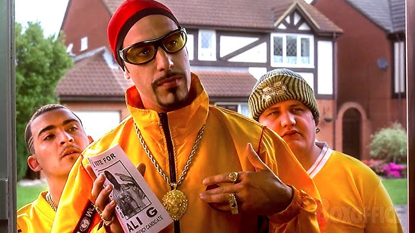
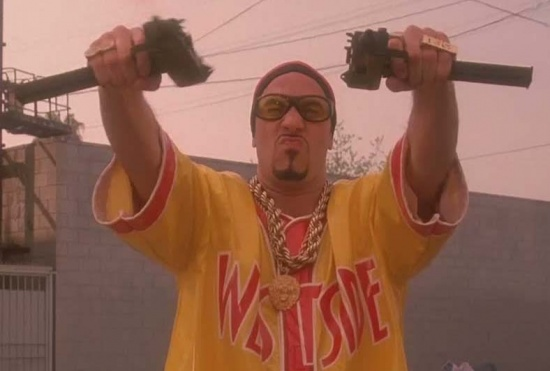

Movie Details
Release Year
2002
Director
Mark Mylod
Genre
Comedy
Runtime
85 minutes
Plot Summary
Ali G unwittingly becomes a pawn in the Chancellor's plot to overthrow the Prime Minister of Great Britain. However, Ali is embraced by the nation as a voice of the youth, making the PM and his government more popular than ever.
When his beloved leisure center is threatened with demolition, Ali G goes on a hunger strike and then stands for Parliament. He is elected, and through a series of hilarious mishaps and misunderstandings, he becomes instrumental in foiling the Chancellor's plot to overthrow the government.


Fun Facts
- First feature film starring the Ali G character
- Filmed primarily in London and Surrey, England
- Many scenes were improvised by Sacha Baron Cohen
- Features cameos from several UK celebrities and politicians